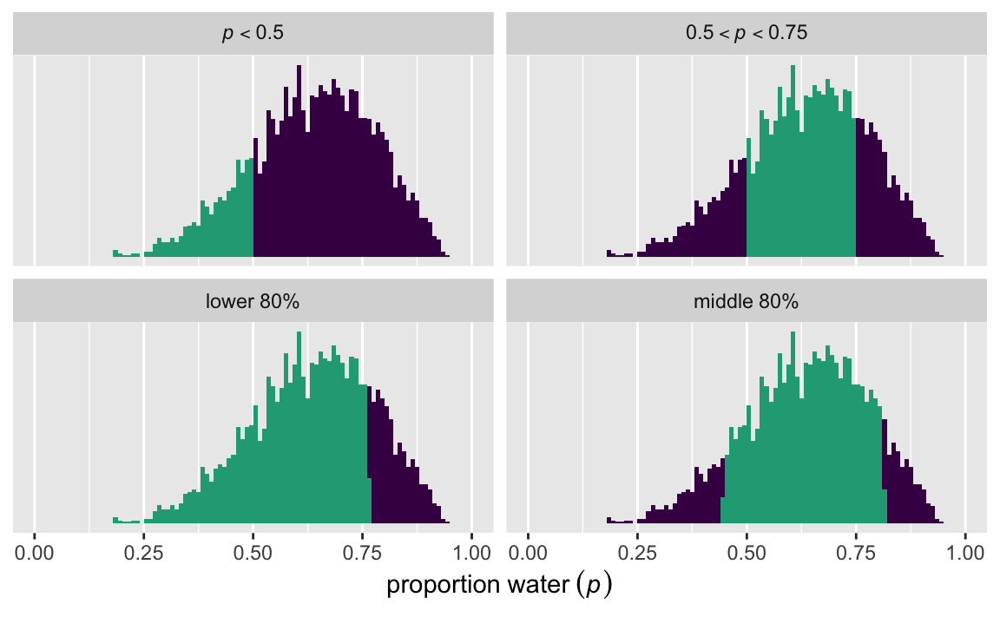
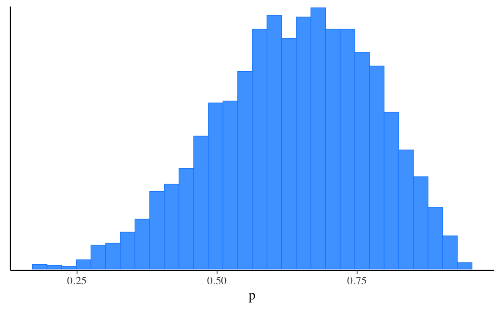

62 Introduzione a CmdStanR
Prerequisiti
- Leggere Getting started with CmdStanR.
Concetti e competenze chiave
- Acquisire le competenze necessarie per utilizzare CmdStan con R.
Preparazione del Notebook
62.1 Introduzione
Riprendiamo l’analisi dei dati fittizi di un compito Go/No-go, in cui sono state registrate 6 risposte corrette su 9 prove, già discussa in precedenza. In questa sezione, utilizzeremo il pacchetto cmdstanr in R, invece di cmdstanpy in Python, per eseguire l’analisi. L’obiettivo di questo capitolo è mostrare come utilizzare CmdStan attraverso il linguaggio R, offrendo un’alternativa all’uso di Python.
In R, i dati vengono salvati in una lista, che equivale a un dizionario in Python.
data_list <- list(
"N" = 9,
"y" = 6
)Successivamente, specifichiamo il percorso del file contenente lo script Stan. È importante notare che lo script Stan rimane identico indipendentemente dall’interfaccia utilizzata, sia essa R o Python.
62.2 Compilazione del modello
Per compilare il modello, utilizziamo la funzione cmdstan_model(), che crea un nuovo oggetto CmdStanModel a partire da un file contenente un programma Stan.
mod <- cmdstan_model(file)Dopo aver compilato il modello, possiamo stamparne le informazioni.
mod$print()
#> data {
#> int<lower=1> N;
#> int<lower=0> y;
#> }
#> parameters {
#> real<lower=0, upper=1> p;
#> }
#> model {
#> y ~ binomial(N, p); // Likelihood
#> p ~ beta(1, 1); // Prior
#> }
#> generated quantities {
#> int<lower=0, upper=1> p_gt_chance = p > 0.5;
#> }62.3 Esecuzione dell’algoritmo MCMC
Il metodo $sample() sugli oggetti CmdStanModel esegue l’algoritmo MCMC predefinito di Stan. L’argomento data accetta una lista di oggetti R con nomi specificati.
fit <- mod$sample(
data = data_list,
seed = 123,
chains = 4,
parallel_chains = 4
)62.4 Statistiche riassuntive del posterior
Il metodo $summary() chiama la funzione summarise_draws() dal pacchetto posterior. Il primo argomento specifica le variabili da riassumere, e gli argomenti successivi sono passati a posterior::summarise_draws() per specificare quali statistiche calcolare, l’uso di più core, ecc.
fit$summary(variables = c("p"))
#> # A tibble: 1 × 10
#> variable mean median sd mad q5 q95 rhat ess_bulk ess_tail
#> <chr> <dbl> <dbl> <dbl> <dbl> <dbl> <dbl> <dbl> <dbl> <dbl>
#> 1 p 0.636 0.647 0.141 0.148 0.389 0.854 1.00 1372. 1351.È possibile utilizzare una formula per riassumere funzioni arbitrarie, come ad esempio la probabilità che \(p\) sia minore o uguale a 0.5.
fit$summary("p", pr_lt_half = ~ mean(. <= 0.5))
#> # A tibble: 1 × 2
#> variable pr_lt_half
#> <chr> <dbl>
#> 1 p 0.17662.5 Estrazione dei campioni posteriori
62.5.1 Estrazione dei campioni
Il metodo $draws() può essere utilizzato per estrarre i campioni posteriori in formati supportati dal pacchetto posterior. Qui dimostriamo i formati draws_array e draws_df.
# default is a 3-D draws_array object from the posterior package
# iterations x chains x variables
draws_arr <- fit$draws() # or format="array"
str(draws_arr)
#> 'draws_array' num [1:1000, 1:4, 1:3] -7.21 -8.34 -9.16 -7.22 -7.21 ...
#> - attr(*, "dimnames")=List of 3
#> ..$ iteration: chr [1:1000] "1" "2" "3" "4" ...
#> ..$ chain : chr [1:4] "1" "2" "3" "4"
#> ..$ variable : chr [1:3] "lp__" "p" "p_gt_chance"Oppure, possiamo usare as_draws_df() per creare un data frame:
draws <- as_draws_df(fit)
head(draws)
#> # A draws_df: 6 iterations, 1 chains, and 3 variables
#> lp__ p p_gt_chance
#> 1 -7.2 0.63 1
#> 2 -8.3 0.41 0
#> 3 -9.2 0.34 0
#> 4 -7.2 0.66 1
#> 5 -7.2 0.63 1
#> 6 -7.2 0.64 1
#> # ... hidden reserved variables {'.chain', '.iteration', '.draw'}Lo stesso risultato si ottiene nel modo seguente:
draws_df <- as_draws_df(draws_arr)
head(draws_df)
#> # A draws_df: 6 iterations, 1 chains, and 3 variables
#> lp__ p p_gt_chance
#> 1 -7.2 0.63 1
#> 2 -8.3 0.41 0
#> 3 -9.2 0.34 0
#> 4 -7.2 0.66 1
#> 5 -7.2 0.63 1
#> 6 -7.2 0.64 1
#> # ... hidden reserved variables {'.chain', '.iteration', '.draw'}Una volta creato un data frame, possiamo facilmente calcolare le statistiche descrittive. Per esempio:
draws_df$p |>
mean()
#> [1] 0.636In questo modo possiamo calcolare la probabilità che, ad esempio, \(p\) sia compreso tra 0.5 e 0.75:
partion_vector <- c("italic(p)<0.5", "{0.5<italic(p)}<0.75", "lower~80*'%'", "middle~80*'%'")
draws_df |>
mutate(
`italic(p)<0.5` = p < 0.5,
`{0.5<italic(p)}<0.75` = p > 0.5 & p < 0.75,
`lower~80*'%'` = p < quantile(p, probs = 0.8),
`middle~80*'%'` = p > quantile(p, probs = 0.1) & p < quantile(p, probs = 0.9)
) |>
pivot_longer(cols = `italic(p)<0.5`:`middle~80*'%'`) |>
mutate(name = factor(name, levels = partion_vector)) |>
ggplot(aes(x = p, fill = value)) +
geom_histogram(boundary = 0, binwidth = 0.01) +
scale_x_continuous(expression(proportion ~ water ~ (italic(p))), limits = 0:1) +
scale_y_continuous(NULL, breaks = NULL) +
scale_fill_viridis_d(end = 0.6, breaks = NULL) +
facet_wrap(~name, labeller = label_parsed)
#> Warning: Dropping 'draws_df' class as required metadata was removed.
62.5.2 Visualizzazione dei campioni
Visualizzare le distribuzioni posteriori è semplice: basta passare l’oggetto restituito dal metodo $draws() direttamente alle funzioni di plotting del pacchetto bayesplot.
mcmc_hist(fit$draws("p"))
#> `stat_bin()` using `bins = 30`. Pick better value with `binwidth`.
62.6 Diagnostica del campionatore
Il metodo $sampler_diagnostics() estrae i valori dei parametri del campionatore (come treedepth__, divergent__, ecc.) in formati supportati dal pacchetto posterior.
str(fit$sampler_diagnostics(format = "df"))
#> draws_df [4,000 × 9] (S3: draws_df/draws/tbl_df/tbl/data.frame)
#> $ treedepth__ : num [1:4000] 2 1 1 2 1 2 2 1 1 2 ...
#> $ divergent__ : num [1:4000] 0 0 0 0 0 0 0 0 0 0 ...
#> $ energy__ : num [1:4000] 7.21 8.57 9.3 9.06 7.23 ...
#> $ accept_stat__: num [1:4000] 1 0.762 0.816 1 0.999 ...
#> $ stepsize__ : num [1:4000] 0.937 0.937 0.937 0.937 0.937 ...
#> $ n_leapfrog__ : num [1:4000] 3 3 1 3 3 3 3 1 1 3 ...
#> $ .chain : int [1:4000] 1 1 1 1 1 1 1 1 1 1 ...
#> $ .iteration : int [1:4000] 1 2 3 4 5 6 7 8 9 10 ...
#> $ .draw : int [1:4000] 1 2 3 4 5 6 7 8 9 10 ...fit$diagnostic_summary()
#> $num_divergent
#> [1] 0 0 0 0
#>
#> $num_max_treedepth
#> [1] 0 0 0 0
#>
#> $ebfmi
#> [1] 1.195 0.977 1.201 0.966Questo processo consente di esaminare in dettaglio le prestazioni del campionatore e di verificare eventuali problemi o inefficienze durante l’esecuzione del modello.
Informazioni sull’Ambiente di Sviluppo
sessionInfo()
#> R version 4.4.2 (2024-10-31)
#> Platform: aarch64-apple-darwin20
#> Running under: macOS Sequoia 15.2
#>
#> Matrix products: default
#> BLAS: /Library/Frameworks/R.framework/Versions/4.4-arm64/Resources/lib/libRblas.0.dylib
#> LAPACK: /Library/Frameworks/R.framework/Versions/4.4-arm64/Resources/lib/libRlapack.dylib; LAPACK version 3.12.0
#>
#> locale:
#> [1] C/UTF-8/C/C/C/C
#>
#> time zone: Europe/Rome
#> tzcode source: internal
#>
#> attached base packages:
#> [1] stats graphics grDevices utils datasets methods
#> [7] base
#>
#> other attached packages:
#> [1] here_1.0.1 bayesplot_1.11.1 posterior_1.6.0
#> [4] cmdstanr_0.8.1.9000 lubridate_1.9.4 forcats_1.0.0
#> [7] stringr_1.5.1 dplyr_1.1.4 purrr_1.0.2
#> [10] readr_2.1.5 tidyr_1.3.1 tibble_3.2.1
#> [13] ggplot2_3.5.1 tidyverse_2.0.0
#>
#> loaded via a namespace (and not attached):
#> [1] tensorA_0.36.2.1 utf8_1.2.4 generics_0.1.3
#> [4] stringi_1.8.4 hms_1.1.3 digest_0.6.37
#> [7] magrittr_2.0.3 evaluate_1.0.1 grid_4.4.2
#> [10] timechange_0.3.0 fastmap_1.2.0 plyr_1.8.9
#> [13] rprojroot_2.0.4 jsonlite_1.8.9 processx_3.8.4
#> [16] backports_1.5.0 ps_1.8.1 fansi_1.0.6
#> [19] viridisLite_0.4.2 scales_1.3.0 abind_1.4-8
#> [22] cli_3.6.3 rlang_1.1.4 munsell_0.5.1
#> [25] withr_3.0.2 yaml_2.3.10 tools_4.4.2
#> [28] reshape2_1.4.4 tzdb_0.4.0 checkmate_2.3.2
#> [31] colorspace_2.1-1 vctrs_0.6.5 R6_2.5.1
#> [34] matrixStats_1.4.1 lifecycle_1.0.4 htmlwidgets_1.6.4
#> [37] pkgconfig_2.0.3 pillar_1.9.0 gtable_0.3.6
#> [40] Rcpp_1.0.13-1 data.table_1.16.4 glue_1.8.0
#> [43] xfun_0.49 tidyselect_1.2.1 knitr_1.49
#> [46] farver_2.1.2 htmltools_0.5.8.1 labeling_0.4.3
#> [49] rmarkdown_2.29 compiler_4.4.2 distributional_0.5.0